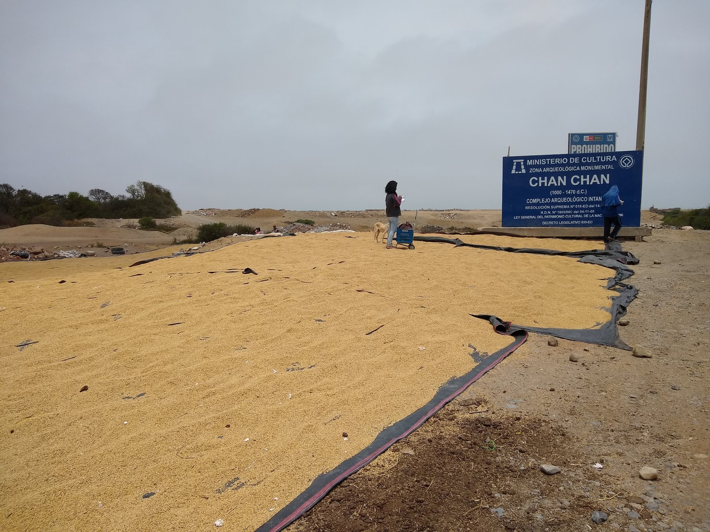
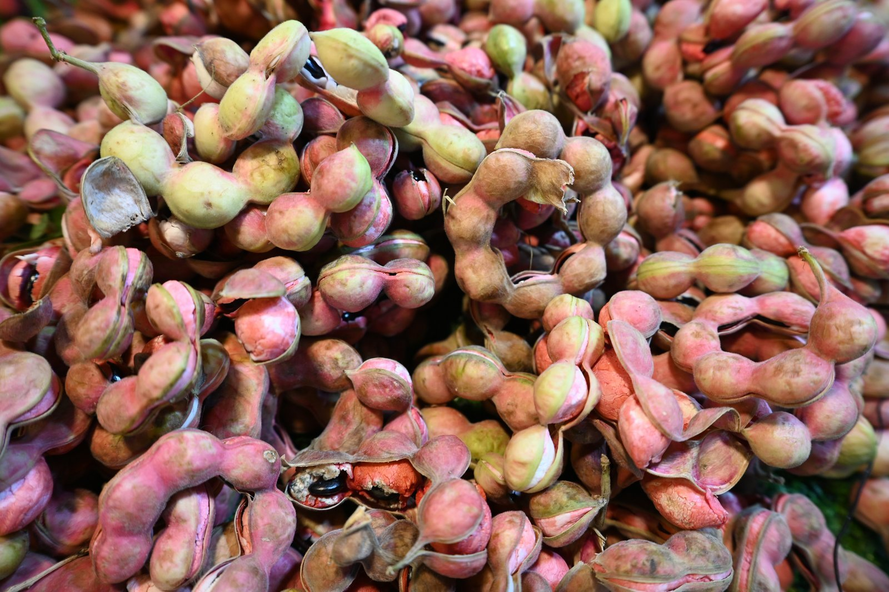
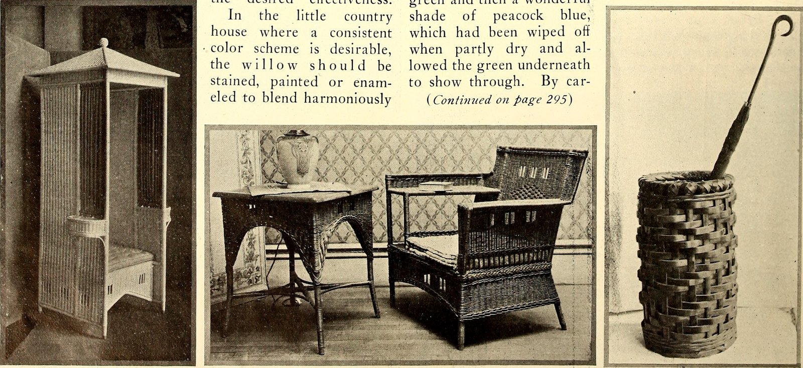

The Four-Century Legacy of Tamarindus Indica
Honoring the monumental tropical shade tree that fed seafaring spice merchants, Ayurvedic scholars, and royal banqueting courts across the Old World.
Trees That Outlive Dynasties
The tamarind tree is not a fragile orchard crop; it is an enduring titan of the fabaceous botanical family. Thriving for more than three centuries in arid tropical climates, its deep taproots draw mineral salts from subterranean aquifers, concentrating calcium, iron, and tartaric acid into pod shells that harden under the solar blaze.
At Tamarind Zesty, we source exclusively from protected century-old groves where farmers harvest each pod cluster by hand using long bamboo poles, ensuring the brittle exterior shell remains unbroken until entering our temperature-regulated aging courtyards.

Courtyard Solar Curing
Freshly collected pod clusters rest on hand-woven bamboo mats beneath high tropical skies for forty consecutive days, gently reducing moisture content to an ideal eighteen percent.

Artisanal Seed Separation
Every individual pod is cracked open by hand to release the glossy obsidian seeds and fibrous vascular bundles without crushing the delicate tartaric pulp sacs.

Aerated Basket Maturation
The cured pods age in well-ventilated woven baskets within earthen godowns, allowing ambient tropical humidity to deepen the pulp's amber-mahogany hue and complex tang.